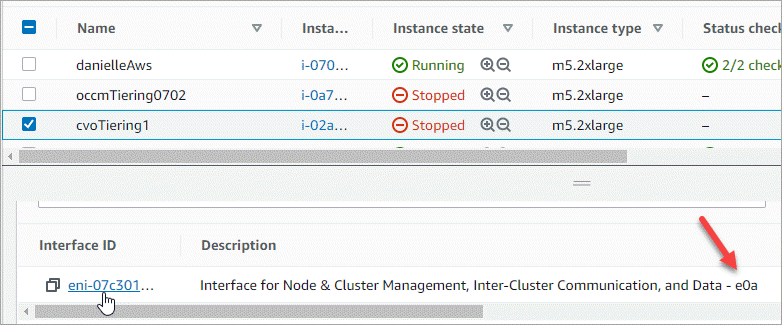

Amazon Web Services
Amazon Web Services
 Google Cloud
Google Cloud
 Microsoft Azure
Microsoft Azure
 要求變更文件
要求變更文件 編輯此頁面
編輯此頁面 瞭解如何作出貢獻
瞭解如何作出貢獻在Cloud Volumes ONTAP AWS中建立資料服務儲存VM以供其使用
儲存虛擬機器是 ONTAP 執行於支援內部的虛擬機器、可為您的用戶端提供儲存與資料服務。您可能知道這是 SVM 或 vserver 。根據預設、系統會設定一個儲存 VM 、但部分組態會支援額外的儲存 VM 。 Cloud Volumes ONTAP
若要建立額外的資料服務儲存VM、您需要在AWS中分配IP位址、然後根據ONTAP 您的靜態組態執行支援功能指令。Cloud Volumes ONTAP
支援的儲存 VM 數量
從9.7版開始、特定Cloud Volumes ONTAP 的支援功能可支援多個儲存VM。前往 "發行說明 Cloud Volumes ONTAP" 驗證Cloud Volumes ONTAP 支援的儲存VM數量是否適用於您的版本的支援。
所有其他 Cloud Volumes ONTAP 的支援功能均支援單一資料服務儲存 VM 、以及一部用於災難恢復的目的地儲存 VM 。如果來源儲存VM發生中斷、您可以啟動目的地儲存VM進行資料存取。
驗證組態的限制
每個EC2執行個體都支援每個網路介面的私有IPv4位址數目上限。在AWS中為新的儲存VM分配IP位址之前、您必須先確認限制。
-
識別執行個體類型的每個介面IP位址數目上限。
-
請記下這個數字、因為您在AWS中分配IP位址時、會在下一節中需要這個數字。
在AWS中分配IP位址
在為新的儲存VM建立生命期之前、必須先將私有的IPv4位址指派給AWS中的連接埠e0a。
請注意、儲存VM的選用管理LIF需要在單一節點系統和單一AZ的HA配對上使用私有IP位址。此管理LIF可連線至SnapCenter 諸如VMware等管理工具。
-
登入AWS並開啟EC2服務。
-
選取Cloud Volumes ONTAP 「這個實例」、然後按一下「網路」。
如果您要在HA配對上建立儲存VM、請選取節點1。
-
向下捲動至*網路介面*、然後按一下*介面ID*以取得連接埠e0a。

-
選取網路介面、然後按一下*「動作」>「管理IP位址」*。
-
展開e0a的IP位址清單。
-
驗證IP位址：
-
計算已分配IP位址的數量、以確認連接埠是否有空間可用於其他IP。
您應該已經在本頁上一節中找出每個介面支援的IP位址上限。
-
選用：前往CLI Cloud Volumes ONTAP 執行*網路介面show*以確認每個IP位址都在使用中。
如果IP位址未在使用中、您可以將其與新的儲存VM搭配使用。
-
-
回到AWS主控台、按一下*指派新的IP位址*、根據新儲存VM所需的容量來指派額外的IP位址。
-
單節點系統：需要一個未使用的次要私有IP。
若要在儲存VM上建立管理LIF、則需要選用的次要私有IP。
-
單一AZ中的HA配對：節點1上需要一個未使用的次要私有IP。
若要在儲存VM上建立管理LIF、則需要選用的次要私有IP。
-
多個AZs中的HA配對：每個節點需要一個未使用的次要私有IP。
-
-
如果您要在單一AZ中分配HA配對的IP位址、請啟用*允許重新指派次要私有IPV4位址*。
-
按一下「 * 儲存 * 」。
-
如果您在多個AZs中有HA配對、則必須針對節點2重複這些步驟。
在單一節點系統上建立儲存VM
這些步驟可在單一節點系統上建立新的儲存VM。建立NAS LIF需要一個私有IP位址、如果您想要建立管理LIF、則需要另一個選用的私有IP位址。
-
建立儲存虛擬機器和通往儲存虛擬機器的路由。
vserver create -rootvolume-security-style unix -rootvolume root_svm_2 -snapshot-policy default -vserver svm_2 -aggregate aggr1network route create -destination 0.0.0.0/0 -vserver svm_2 -gateway subnet_gateway -
建立NAS LIF。
network interface create -auto-revert true -vserver svm_2 -service-policy default-data-files -home-port e0a -address private_ip_x -netmask node1Mask -lif ip_nas_2 -home-node cvo-node其中_Private IP x是e0a上未使用的次要私有IP。
-
選用：建立儲存VM管理LIF。
network interface create -auto-revert true -vserver svm_2 -service-policy default-management -home-port e0a -address private_ip_y -netmask node1Mask -lif ip_svm_mgmt_2 -home-node cvo-node其中_Private IP是e0a上另一個未使用的次要私有IP。
-
將一個或多個集合體指派給儲存VM。
vserver add-aggregates -vserver svm_2 -aggregates aggr1,aggr2這是必要步驟、因為新的儲存VM需要存取至少一個Aggregate、才能在儲存VM上建立磁碟區。
在單一AZ的HA配對上建立儲存VM
這些步驟可在單一AZ的HA配對上建立新的儲存VM。建立NAS LIF需要一個私有IP位址、如果您想要建立管理LIF、則需要另一個選用的私有IP位址。
這兩個生命點都會分配到節點1上。如果發生故障、私有IP位址可以在節點之間移動。
-
建立儲存虛擬機器和通往儲存虛擬機器的路由。
vserver create -rootvolume-security-style unix -rootvolume root_svm_2 -snapshot-policy default -vserver svm_2 -aggregate aggr1network route create -destination 0.0.0.0/0 -vserver svm_2 -gateway subnet_gateway -
在節點1上建立NAS LIF。
network interface create -auto-revert true -vserver svm_2 -service-policy default-data-files -home-port e0a -address private_ip_x -netmask node1Mask -lif ip_nas_2 -home-node cvo-node1其中_Private IP x是CVO節點1 e0a上未使用的次要私有IP。在接管時、此IP位址可重新定位至CVO-node2的e0a、因為服務原則的預設資料檔表示IP可移轉至合作夥伴節點。
-
選用：在節點1上建立儲存VM管理LIF。
network interface create -auto-revert true -vserver svm_2 -service-policy default-management -home-port e0a -address private_ip_y -netmask node1Mask -lif ip_svm_mgmt_2 -home-node cvo-node1其中_Private IP是e0a上另一個未使用的次要私有IP。
-
將一個或多個集合體指派給儲存VM。
vserver add-aggregates -vserver svm_2 -aggregates aggr1,aggr2這是必要步驟、因為新的儲存VM需要存取至少一個Aggregate、才能在儲存VM上建立磁碟區。
在多個AZs的HA配對上建立儲存VM
這些步驟可在多個AZs的HA配對上建立新的儲存VM。
NAS LIF需要_浮動_ IP位址、管理LIF則為選用。這些浮動IP位址不需要您在AWS中分配私有IP。而是會在AWS路由表中自動設定浮動IP、以指向同一個VPC中的特定節點ENI。
為了讓浮動IP能夠搭配ONTAP 使用、必須在每個節點上的每個儲存VM上設定私有IP位址。這反映在以下步驟中、其中iSCSI LIF是在節點1和節點2上建立。
-
建立儲存虛擬機器和通往儲存虛擬機器的路由。
vserver create -rootvolume-security-style unix -rootvolume root_svm_2 -snapshot-policy default -vserver svm_2 -aggregate aggr1network route create -destination 0.0.0.0/0 -vserver svm_2 -gateway subnet_gateway -
在節點1上建立NAS LIF。
network interface create -auto-revert true -vserver svm_2 -service-policy default-data-files -home-port e0a -address floating_ip -netmask node1Mask -lif ip_nas_floating_2 -home-node cvo-node1-
在部署HA組態的AWS區域中、所有VPC的浮動IP位址必須位於CIDR區塊之外。192．168．0．27是一個浮動IP地址的例子。 "深入瞭解如何選擇浮動IP位址"。
-
「服務原則預設資料檔案」表示IP可以移轉至合作夥伴節點。
-
-
選用：在節點1上建立儲存VM管理LIF。
network interface create -auto-revert true -vserver svm_2 -service-policy default-management -home-port e0a -address floating_ip -netmask node1Mask -lif ip_svm_mgmt_2 -home-node cvo-node1 -
在節點1上建立iSCSI LIF。
network interface create -vserver svm_2 -service-policy default-data-blocks -home-port e0a -address private_ip -netmask nodei1Mask -lif ip_node1_iscsi_2 -home-node cvo-node1-
此iSCSI LIF是支援儲存VM中浮動IP的LIF移轉所必需的。它不一定是iSCSI LIF、但無法設定在節點之間移轉。
-
「服務原則預設資料區塊」表示IP位址不會在節點之間移轉。
-
_Private IP是CVO節點1的eth0（e0a）上未使用的次要私有IP位址。
-
-
在節點2上建立iSCSI LIF。
network interface create -vserver svm_2 -service-policy default-data-blocks -home-port e0a -address private_ip -netmaskNode2Mask -lif ip_node2_iscsi_2 -home-node cvo-node2-
此iSCSI LIF是支援儲存VM中浮動IP的LIF移轉所必需的。它不一定是iSCSI LIF、但無法設定在節點之間移轉。
-
「服務原則預設資料區塊」表示IP位址不會在節點之間移轉。
-
_Private IP是CVO節點2的eth0（e0a）上未使用的次要私有IP位址。
-
-
將一個或多個集合體指派給儲存VM。
vserver add-aggregates -vserver svm_2 -aggregates aggr1,aggr2這是必要步驟、因為新的儲存VM需要存取至少一個Aggregate、才能在儲存VM上建立磁碟區。